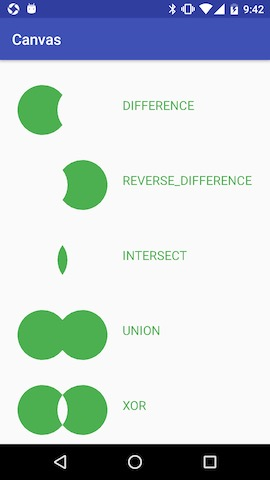

Path封装了由直线和曲线(二次，三次贝塞尔曲线)构成的几何路径。你能用Canvas中的drawPath来把这条路径画出来(同样支持Paint的不同绘制模式)，也可以用于剪裁画布和根据路径绘制文字。我们有时会用Path来描述一个图像的轮廓，所以也会称为轮廓线(轮廓线仅是Path的一种使用方法，两者并不等价)。
canvas只能绘制出常见的形状，但是无法绘制出复杂的形状。
moveTo、 setLastPoint、 lineTo 和 close
- moveTo：移动下一次操作的起点位置
- setLastPoint：重置当前path中最后一个点位置，如果在绘制之前调用，效果和moveTo相同
- lineTo：添加上一个点到当前点之间的直线到Path
- close：连接第一个点连接到最后一个点，形成一个闭合区域
Paint mPaint = new Paint(); // 创建画笔
mPaint.setColor(getResources().getColor(R.color.green));//设置画笔颜色
mPaint.setStyle(Paint.Style.STROKE);//设置画笔样式
mPaint.setStrokeWidth(10f); //设置画笔宽度为10px
Path path = new Path(); // 创建Path
path.lineTo(400, 400); // 添加(0,0)到(400,400)之间的直线
path.moveTo(400, 200); // 移动到(400,200)
path.lineTo(200, 0); // 添加(200,0)到(400,400)之间的直线
canvas.drawPath(path, mPaint); // 绘制Path

Path path = new Path(); // 创建Path
path.lineTo(400, 400); // 添加(0,0)到(400,400)之间的直线
path.setLastPoint(400, 200); //设置终点为(400,200)
path.lineTo(200, 0);
path.close(); // close
canvas.drawPath(path, mPaint); // 绘制Path

添加基本图形
Path提供了如下方法来添加基本图形
// 圆形
//Direction是一个枚举(Enum)类型，里面只有两个枚举常量 CW clockwise 顺时针
//CCW counter-clockwise 逆时针
public void addCircle (float x, float y, float radius, Path.Direction dir)
// 椭圆
public void addOval (RectF oval, Path.Direction dir)
// 矩形
public void addRect (float left, float top, float right, float bottom, Path.Direction dir)
public void addRect (RectF rect, Path.Direction dir)
// 圆角矩形
public void addRoundRect (RectF rect, float[] radii, Path.Direction dir)
public void addRoundRect (RectF rect, float rx, float ry, Path.Direction dir)
添加弧形
// addArc 直接添加一个圆弧到path中
public void addArc (RectF oval, float startAngle, float sweepAngle)
// arcTo 添加一个圆弧到path，如果圆弧的起点和上次最后一个坐标点不相同，就连接两个点
public void arcTo (RectF oval, float startAngle, float sweepAngle)
public void arcTo (RectF oval, float startAngle, float sweepAngle, boolean forceMoveTo)
其他方法
- isEmpty：判断path中是否包含内容
- isRect：判断是否是矩形
- set:将新的path赋值到现有path。
- offset：将path平移一段
填充规则
我们要做一个同心圆，我们的代码如下：
Path path = new Path();
path.addCircle(500,500,400,Path.Direction.CW);
path.addCircle(500,500,300,Path.Direction.CW);
canvas.drawPath(path,mPaint);

但是得到的是一个实心圆。我们要给一个图形内部填充颜色，首先需要分清哪一部分是外部，哪一部分是内部，机器不像我们人那么聪明，机器是如何判断内外呢？
Path为我们提供setFillType方法来设置内外判定的规则
public void setFillType(FillType ft)
FillType是一个枚举类型，包括如下值
- EVEN_ODD
- INVERSE_EVEN_ODD
- WINDING
- INVERSE_WINDING
奇偶规则
EVEN_ODD遵从奇偶规则，即从任意位置p作一条射线， 若与该射线相交的图形边的数目为奇数，则p是图形内部点，否则是外部点。
Path path = new Path();
path.addCircle(500,500,400,Path.Direction.CW);
path.addCircle(500,500,300,Path.Direction.CW);
path.setFillType(Path.FillType.EVEN_ODD);
canvas.drawPath(path,mPaint);


INVERSE_EVEN_ODD遵从反奇偶规则。与奇偶规则相反。
Path path = new Path();
path.addCircle(500,500,400,Path.Direction.CW);
path.addCircle(500,500,300,Path.Direction.CW);
path.setFillType(Path.FillType.EVEN_ODD);
canvas.drawPath(path,mPaint);

非零环绕数规则
WINDING遵从非零环绕数规则，即首先使图形的边变为矢量（具有方向）。将环绕数初始化为零。再从任意位置p作一条射线。当从p点沿射线方向移动时，对在每个方向上穿过射线的边计数，每当图形的边从右到左穿过射线时，环绕数加1，从左到右时，环绕数减1。处理完图形的所有相关边之后，若环绕数为非零，则p为内部点，否则，p是外部点。

A点：首先，内圆从右向左穿过射线，环绕数加一（1）;然后内圆从左到右穿过射线，环绕数减一（0）;外圆从右向左穿过射线，环绕数加一（1）。由于该值不为零，所以属于内部。
B点：首先，内圆从左向右穿过射线，环绕数减一（-1）;外圆从右向左穿过射线，环绕数加一（0）。由于该值为零，所以属于外部。
Path path = new Path();
path.addCircle(500,500,400,Path.Direction.CW); //内圆顺时针
path.addCircle(500,500,300,Path.Direction.CCW); //外圆逆时针
path.setFillType(Path.FillType.WINDING);
canvas.drawPath(path,mPaint);

改变内圈的方向

A点：首先，内圆从左向右穿过射线，环绕数加一（-1）;然后内圆从右到左穿过射线，环绕数加一（0）;外圆从右向左穿过射线，环绕数加一（1）。由于该值不为零，所以属于内部。
B点：首先，内圆从右向左穿过射线，环绕数加1（1）;外圆从右向左穿过射线，环绕数加一（2）。由于该值不为零，所以属于内部。
Path path = new Path();
path.addCircle(500,500,400,Path.Direction.CCW); //内圆逆时针
path.addCircle(500,500,300,Path.Direction.CCW); //外圆逆时针
path.setFillType(Path.FillType.WINDING);
canvas.drawPath(path,mPaint);

INVERSE_WINDING遵从反非零环绕数规则。与WINDING相反。
Path path = new Path();
path.addCircle(500,500,400,Path.Direction.CW); //内圆顺时针
path.addCircle(500,500,300,Path.Direction.CCW); //外圆逆时针
path.setFillType(Path.FillType.INVERSE_WINDING);
canvas.drawPath(path,mPaint);

Path path = new Path();
path.addCircle(500,500,400,Path.Direction.CCW); //内圆逆时针
path.addCircle(500,500,300,Path.Direction.CCW); //外圆逆时针
path.setFillType(Path.FillType.INVERSE_WINDING);
canvas.drawPath(path,mPaint);

其他与填充模式相关的方法
除了上面提到的setFillType方法，Path还提供了下面3个与填充模式相关的方法：
//获取当前填充模式
public FillType getFillType()
//判断是否是反向规则
public boolean isInverseFillType()
//原有规则与反向规则之间相互切换
public void toggleInverseFillType()
布尔操作（API>19)
布尔操作是两个Path之间的运算，主要作用是用一些简单的图形通过一些规则合成一些相对比较复杂，或难以直接得到的图形。
在Path中的布尔运算有两个方法：
// 对 path1 和 path2 执行布尔运算，运算方式由第二个参数指定，运算结果存入到path1中。
boolean op (Path path, Path.Op op)
// 对 path1 和 path2 执行布尔运算，运算方式由第三个参数指定，运算结果存入到path3中。
boolean op (Path path1, Path path2, Path.Op op)
两个方法中的返回值用于判断布尔运算是否成功。Path.Op可选的值包括如下：
| 逻辑名称 | 类比 | 说明 | 示意图 |
|---|---|---|---|
| DIFFERENCE | 差集 | Path1中减去Path2后剩下的部分 |  |
| REVERSE_DIFFERENCE | 差集 | Path2中减去Path1后剩下的部分 |  |
| INTERSECT | 交集 | Path1与Path2相交的部分 |  |
| UNION | 并集 | 包含全部Path1和Path2 |  |
| XOR | 异或 | 包含Path1与Path2但不包括两者相交的部分 |  |
int x = 80;
int r = 100;
canvas.translate(250,0);
Path path1 = new Path();
Path path2 = new Path();
Path pathOpResult = new Path();
path1.addCircle(-x, 0, r, Path.Direction.CW);
path2.addCircle(x, 0, r, Path.Direction.CW);
pathOpResult.op(path1,path2, Path.Op.DIFFERENCE);
canvas.translate(0, 200);
canvas.drawText("DIFFERENCE", 240,0,mPaint);
canvas.drawPath(pathOpResult,mPaint);
pathOpResult.op(path1,path2, Path.Op.REVERSE_DIFFERENCE);
canvas.translate(0, 300);
canvas.drawText("REVERSE_DIFFERENCE", 240,0,mPaint);
canvas.drawPath(pathOpResult,mPaint);
pathOpResult.op(path1,path2, Path.Op.INTERSECT);
canvas.translate(0, 300);
canvas.drawText("INTERSECT", 240,0,mPaint);
canvas.drawPath(pathOpResult,mPaint);
pathOpResult.op(path1,path2, Path.Op.UNION);
canvas.translate(0, 300);
canvas.drawText("UNION", 240,0,mPaint);
canvas.drawPath(pathOpResult,mPaint);
pathOpResult.op(path1,path2, Path.Op.XOR);
canvas.translate(0, 300);
canvas.drawText("XOR", 240,0,mPaint);
canvas.drawPath(pathOpResult,mPaint);

计算边界
//bounds 测量结果会放入这个矩形
//exact 是否精确测量，目前这一个参数作用已经废弃，一般写true即可
void computeBounds (RectF bounds, boolean exact)
这个方法主要作用是计算Path所占用的空间以及所在位置。
重置path
重置Path有两个方法，分别是reset和rewind，两者区别主要有以下两点：
| 方法 | 是否保留FillType设置 | 是否保留原有数据结构 |
|---|---|---|
| reset | 是 | 否 |
| rewind | 否 | 是 |
这个两个方法应该何时选择呢？
选择权重: FillType > 数据结构
因为“FillType”影响的是显示效果，而“数据结构”影响的是重建速度。